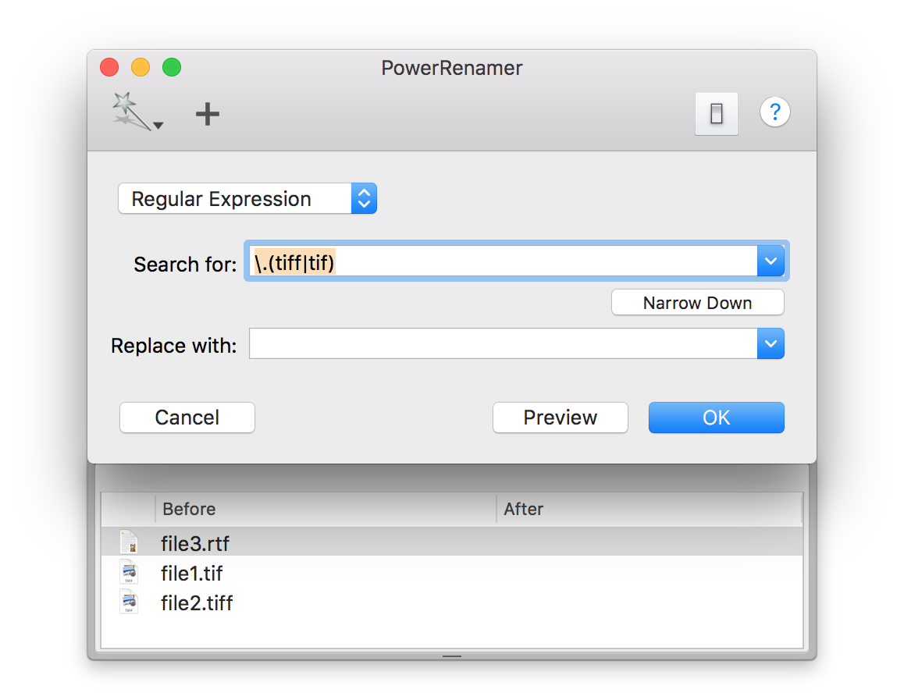

PowerRenamer normally obtain target files from Finder's selection. But you can specify files through a service menu "Rename Files" or dropping files to the application icon.
Passing files through the service menu or drag&drop cause to open a preview drawer which display passed files. The drawer opened by using the services menu or drag & drop is not closed untill pressing "OK" button. You can deal with fields in the preview drawer instead of Finder's selection. Also you can add a file into the table in the drawer by drag & drop.
